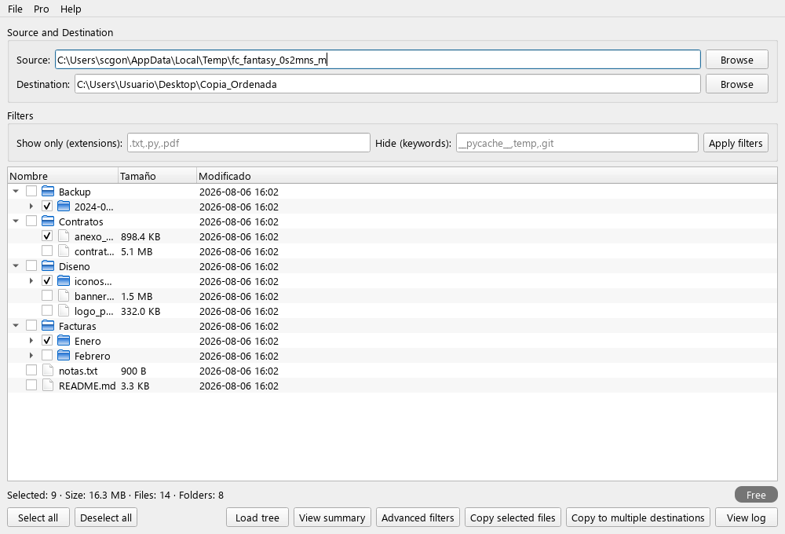
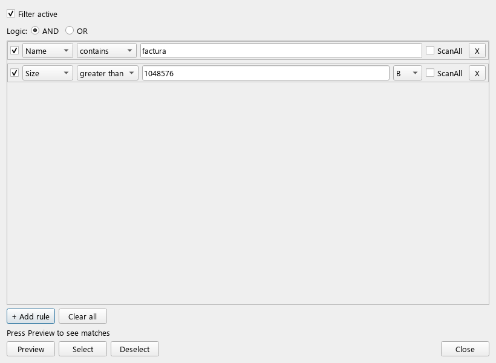
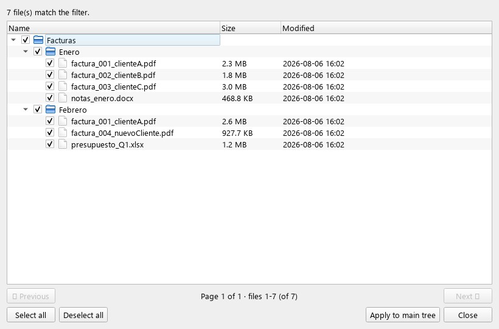
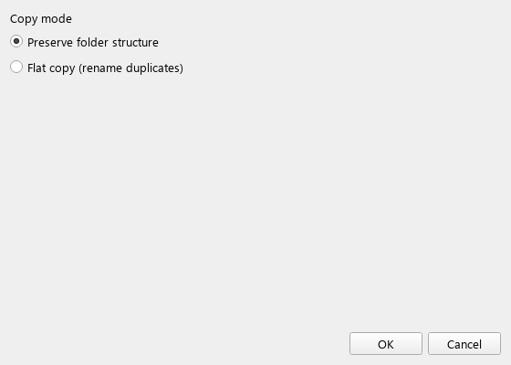
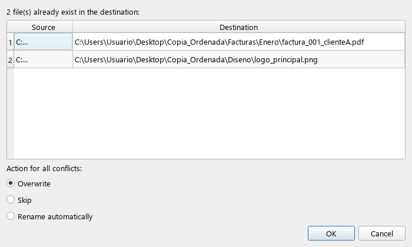
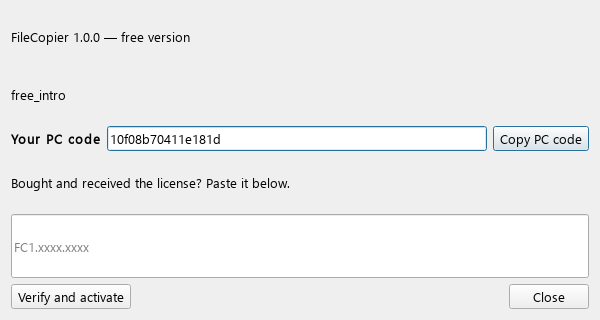

FileCopier te permite copiar archivos de forma selectiva con filtros avanzados, y luego aplicar el resultado a una carpeta destino, a uno o varios destinos a la vez, o exportar un informe.
Hacé clic en *Origen → Examinar…*, seleccioná la carpeta raíz a escanear y pulsá **Cargar árbol**. FileCopier lee la estructura (aún no copia nada).

Ventana principal: árbol origen cargado con la estructura ficticia 'Proyecto 2024'
Hacé clic en **Filtro** para abrir el cuadro de filtro. Armá reglas (por nombre, extensión, tamaño, fecha, ruta). La edición gratuita permite hasta 2 reglas; Pro quita el límite. Aplicá — los archivos coincidentes aparecen en *Previsualización*.

Cuadro de filtro — reglas AND (p.ej. nombre contiene 'factura') para afinar la selección
El cuadro de Previsualización muestra cada archivo coincidente. Desmarcá lo que querés omitir y pulsá **Aplicar al árbol principal**. Si el destino ya contiene un archivo con el mismo nombre, aparecerá el cuadro de *Conflictos* para decidir: sobrescribir, omitir o renombrar.

Cuadro de previsualización — cada archivo coincidente listado antes de copiar
Ingresá uno o varios destinos, elegí el manejo de colisiones y pulsá **Copiar**. Un diálogo de progreso muestra la velocidad y un resumen indica cuántos archivos/carpetas se copiaron, omitieron o tuvieron conflicto.

Opciones de copia — copia plana o con estructura, manejo de duplicados

Cuadro de conflictos — resuelve archivos que ya existen en el destino
Pro (USD 10, vitalicia, por dispositivo) quita el límite de 100 archivos gratuitos, el techo de 2 reglas de filtro y habilita la copia a múltiples destinos. Para activarlo, comprad vía el contacto de abajo y entrá el código PC + la clave recibida en **Ayuda → Activar Pro…**.

Activar Pro — tu código PC (atado a la máquina) y clave de licencia
scgonza0@gmail.com